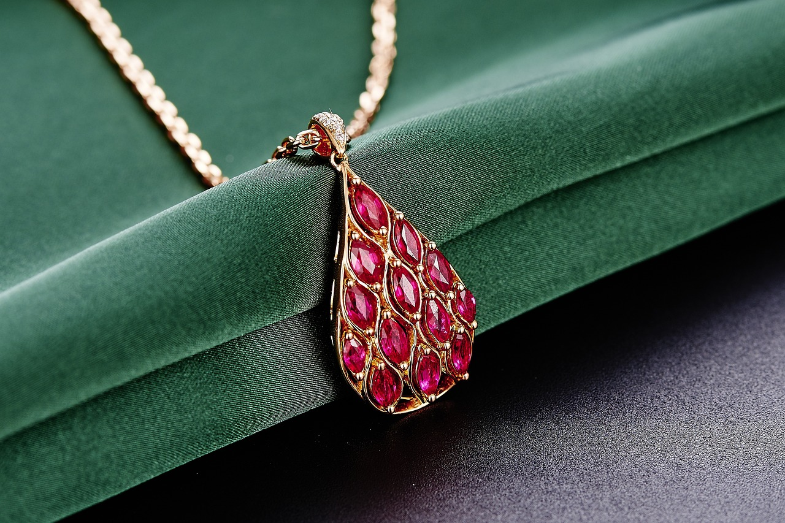

Types of Jewels

There are many different varients of jewels, and they each have something about them that sets them off from most other gems. Some jewels could be made from the same mineral as others but with a different color while others have mineral composition that is very different, yet their colors look exactly the same.Listed below are just a few of the most well-known gemstones and their qualities.
Emeralds

Emeralds are beautiful dark green jewels and are among the most desired gemstones in the world. Coming from a colorless mineral known as beryl, it is similar to aquamarine aside from the color. It is also very brittle, and it has a special rectangular cut to make it more durable.
Diamonds

Diamonds are the most well-known out of all jewels because of their rarity and dazzling beauty. It's no secret as to why they are used in so much jewelry, but that's only one of its uses. They happen to also be one of the strongest materials known to man; some are even used in oil drilling, specialized scalpels, tool manufacturing, and many other industrial uses.
Sapphires
The dark ocean-blue color possessed by sapphires make them easily eye-catching. Their corundum makeup gives them a hardness close to that of diamonds, but they don't have a use in industry, so they're used in jewelry and decoration. While their main color is dark blue, they've also been known to be other colors, such as yellow, green, or even pink.
Rubies
Being made up of corundum, rubies share the same chemical makeup as sapphires. What seperates the two is the well-known dark red color that rubies have. Their luxurious bloodlike color is what makes them such widely desired jewels.